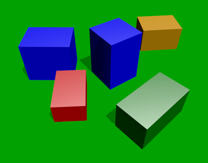
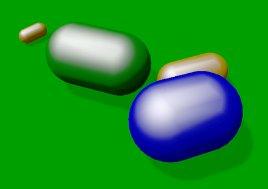
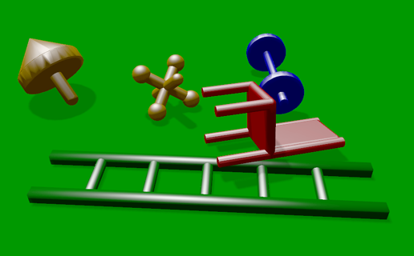
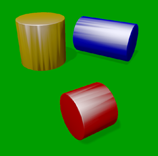
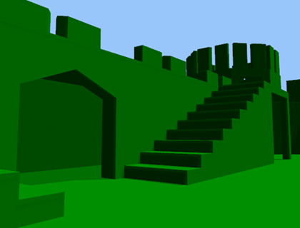
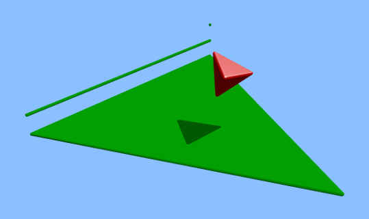
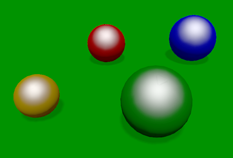
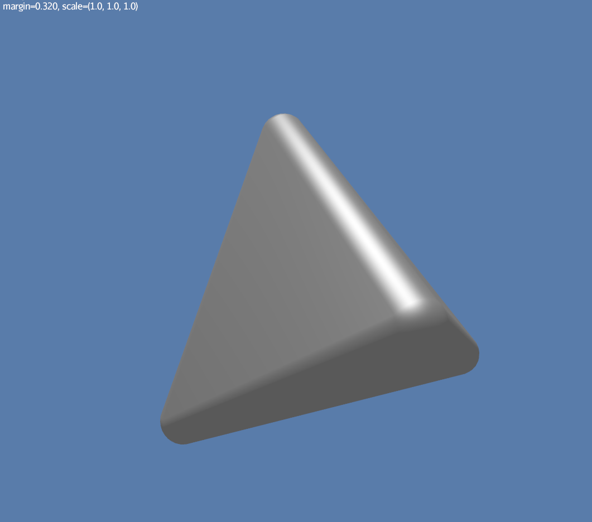

Choosing collision shapes
A collision shape describes the shape and size of a collision object such as a rigid body.
The 16 shape classes
The examples so far have all used spheres, cubes, and/or cylinders.
However, those are only 3 of the 16 subclasses of
CollisionShape.
The subclasses are summarized here, in lexicographic order, with illustrations and lists of key properties (explained below):
1. → convex |
|
|
→ convex |
 |
|
→ convex |
 |
|
→ neither concave nor convex |
 |
|
→ convex |
|
|
→ convex |
|
|
→ convex |
 |
8. → concave |
(no image) |
|
→ concave |
|
|
→ concave |
|
|
→ convex |
|
|
→ concave |
 |
13. → convex |
|
|
→ concave and infinite |
|
|
→ convex |
 |
|
→ convex |
 |


The CompoundCollisionShape
class is especially important because
it enables any number of child shapes
to be combined into a single compound shape.
|
Due to limitations of Bullet, collisions between |
Convex versus concave
The convex collision-shape classes are those that guarantee the convex property: for any 2 locations inside a shape, the line segment connecting those locations lies entirely inside the shape.
Here are 2 equivalent ways to test whether a shape belongs to a convex class:
boolean convexClass = (shape instanceof ConvexShape);
boolean isConvex = shape.isConvex();
assert convexClass == isConvex;| In this context, "convex" is a property of classes, not instances. While specific instances of non-convex classes have the convex property, those classes don’t guarantee it for all instances. |
Concave is essentially the opposite of convex, except that compound shapes
are regarded as neither convex nor concave.
No shape is both convex and concave.
To test whether a shape belongs to a concave class, use shape.isConcave().
Margin
All collision-shape subtypes except
CapsuleCollisionShape
and
SphereCollisionShape
incorporate a margin, a narrow zone near the surface of the shape.
(The word margin refers to both the zone and its thickness.)
According to
the Bullet User Manual,
the purpose of margin is
"to improve performance and reliability of the collision detection."
For all shapes with margin, the default thickness is 0.04 physics-space units.
| While methods are provided to alter margins (and the default margin), doing so is not recommended. |
Precise versus imprecise
A precise shape is a collision shape whose effective shape (observed in collisions, contact tests, ray tests, and sweep tests) is unaffected by margin.
While most collision-shape subtypes are precise, 5 of them are not. For 4 of them, margin simply expands their effective shapes:
Margin also distorts a
CylinderCollisionShape,
but its effect there is more complicated.
Here are illustrations of 4 otherwise identical simplex shapes with different margins:
|
 |
|
|


Since margin is defined in physics-space units, its effects are most noticeable for small shapes.
When using imprecise shapes, you may compensate for margin by shrinking the shape’s dimensions (for a cone or cylinder shape) or by moving its defining vertices inward (for a simplex or hull shape).
Another possible workaround would be to scale the physics space so as to make the effects of margin less obvious.
Suitability for dynamic bodies
Not all collision shapes are suitable for dynamic rigid bodies.
For instance, collision detection is unreliable between zero-thickness shapes such as:
-
HullCollisionShapewith 1-to-3 vertices, -
PlaneCollisionShape, and -
SimplexCollisionShapewith 1-to-3 vertices.
Furthermore, the following shape classes are suitable only for kinematic or static objects because the simulator cannot determine their mass distributions:
The safest shapes for dynamic rigid bodies are the 5 primitives listed below. All have at least one axis of symmetry, and their centers and axes are well-known:
Many asymmetric shapes are also suitable for dynamic rigid bodies. With such shapes, however, care should be taken to ensure the plausibility of the center of mass and principal axes. At the very least, the shape’s center should be located well inside its convex hull.
HelloMadMallet is a simple application that demonstrates the effect of an implausibly centered shape. Things to notice while running the app:
-
A dynamic rigid body, shaped like a mallet, falls under the influence of gravity.
-
Unlike a real mallet, the body’s center of mass (visualized by 3 arrows) is located at the end of its handle.
-
After landing, the mallet tends to stand erect. Although this orientation seems unnatural, it is the precisely the one that minimizes the mallet’s gravitational potential.
The following classes can be used to generate asymmetric shapes for rigid bodies:
-
HullCollisionShapewith 4 or more vertices, -
SimplexCollisionShapewith 4 vertices, and -
CompoundCollisionShapewith suitable children.
In the case of a
CompoundCollisionShape,
the principalAxes() and correctAxes() methods
may be used to adjust its center and axes for a specific mass distribution.
HelloMassDistribution is a simple
application that demonstrates the use of principalAxes() and correctAxes().
Things to notice while running the app:
-
This time, the mallet’s center of mass (visualized by 3 arrows) lies much closer to the head, in a very plausible location.
-
After landing, the mallet comes to rest on its side, which is a natural orientation for a mallet.
Note: The principalAxes() method relies on each child having an accurate
center, axes, and moment of inertia.
Scaling
Some applications require collision shapes that are scalable (can be dynamically shrunk or enlarged). However, not all collision shapes can scale arbitrarily. In particular:
-
SimplexCollisionShapedoesn’t support scaling; the only allowed scale is (1,1,1). -
CapsuleCollisionShape,ConeCollisionShape, andSphereCollisionShapesupport only uniform scaling, where all axes have the same scale factor, such as (0.2, 0.2, 0.2) or (9,9,9). -
CylinderCollisionShapeallows the height and base to scale independently, but the scale factors of both base axes must be equal. In other words, the cross section must remain circular. So (9,9,9) would be allowed for any cylinder, but (9,1,1) would be allowed only for cylinders where the local X axis is the height axis.
You can test at runtime whether a particular scaling is applicable to particular shape:
if (shape.canScale(newScale)) {
shape.setScale(newScale);
}Choosing a shape
For efficient simulation, the general rule is: "Use the simplest shape that yields the desired behavior." Focusing on behavior (rather than appearance) helps you avoid simulating details that don’t matter. For instance:
-
A character’s hair should probably be omitted from their collision shape.
-
Any small object that only encounters large, flat surfaces can probably be approximated by a convex hull.
-
If a container remains sealed, its collision shape need not be hollow.
Because JMonkeyEngine models are composed of triangle meshes,
beginners are often tempted to use mesh-based shapes
(such as GImpactCollisionShape)
for everything.
However, since mesh-based collision detection is CPU-intensive,
simpler shapes are often a better choice,
even when they don’t closely match the model’s shape.
In particular, capsule shapes are often used for humanoid models.
The following pseudo-code algorithm may be helpful:
if (the object doesn't move and isn't involved in collisions) {
use an EmptyShape or don't add the object to the space
} else if (the object doesn't move
and its shape can be approximated by an infinite plane) {
use a PlaneCollisionShape
} else if (the object doesn't move
and its shape can be approximated by point, line segment, or triangle) {
use a SimplexCollisionShape
} else if (the object doesn't move
and its shape can be approximated by rectangle) {
use a Box2dShape
} else if (the object doesn't move
and its shape can be approximated by 2-D convex polygon) {
use a Convex2dShape
} else if (its shape can be approximated by a tetrahedron) {
use a SimplexCollisionShape
} else if (its shape can be approximated by a centered sphere) {
use a SphereCollisionShape
} else if (its shape can be approximated by a centered rectangular solid) {
use a BoxCollisionShape
} else if (its shape can be approximated by a centered capsule) {
use a CapsuleCollisionShape
} else if (its shape can be approximated by a centered cylinder) {
use a CylinderCollisionShape
} else if (its shape can be approximated by a centered cone) {
use a ConeCollisionShape
} else if (its shape can be approximated by an ellipsoid
or an eccentric sphere
or an eccentric capsule
or the convex hull of multiple spheres) {
use a MultiSphere
} else if (its shape can be approximated by an eccentric primitive
or a combination of convex primitives) {
use a CompoundCollisionShape
} else if (the object does not move) {
if (it is a heightfield) {
use a HeightfieldCollisionShape
} else {
use a MeshCollisionShape
}
} else { // if the object moves
if (its shape can be approximated by a convex hull) {
use a HullCollisionShape
} else if (its shape can be decomposed into convex hulls) {
use a compound of hull shapes
} else {
use a GImpactCollisionShape
}
}
(Pseudocode adapted from the flowchart on page 13 of the Bullet User Manual.)
GImpactCollisionShape
should be your last resort!
|
Automated shape generation
The CollisionShapeFactory class
automates the creation of collision shapes for models.
By convention, all factory methods skip over geometries
that have the "JmePhysicsIgnore" user-data key set to true.
For static bodies
The createMeshShape() method
creates a collision shape suitable for a static rigid body.
It constructs a
HeightfieldCollisionShape
for each TerrainQuad and TerrainPatch in the model.
It constructs a MeshCollisionShape
for each non-terrain geometry in the model.
And if the model’s root spatial is a node,
it combines all the heightfields and mesh shapes into a single compound shape.
The createMergedMeshShape() method
creates a simple MeshCollisionShape
suitable for a static rigid body.
Unlike createMeshShape(), it ignores terrain.
For dynamic bodies
Faced with the task of simulating a non-convex rigid body (such as a cross or ring), it’s best to decompose it into convex shapes that, when recombined, will approximate the desired behavior.
There are various approaches,
depending how much the developer knows about the object’s shape.
If the model’s mesh is generated procedurally, it may be possible
to decompose it during the generation process.
Or if the object is modeled in Blender,
it may be practical to manually decompose it there
into meshes that are convex or nearly so.
In both cases, the desired compound shape can then be generated using
createDynamicMeshShape().
Meshes already decomposed
The createDynamicMeshShape() method
creates a collision shape suitable for a dynamic rigid body.
It constructs a hull shape for each geometry,
and if the model’s root spatial is a node,
it combines all the hulls into a single compound shape.
This approach comes with 3 caveats:
-
For good fidelity, each mesh in the model must be convex or nearly so.
-
The center of the resulting collision shape is at the model’s origin, which might not be a plausible location for it.
-
It’s often possible to generate a more efficient shape by hand.
Automated decomposition
For situations where manual decomposition is impractical, Minie incorporates Khaled Mamou’s Volumetric-Hierarchical Approximate Convex Decomposition (V-HACD) algorithm. V-HACD makes it easy to decompose a 3-D model into a compound of hull shapes:
VHACDParameters parms = new VHACDParameters();
CollisionShape shape
= CollisionShapeFactory.createVhacdShape(modelRoot, parms, null);The V-HACD algorithm is costly to run, but for many applications it can be run in advance and the output stored in J3O format until needed. During simulation, the resulting shape will usually be much far efficient than a GImpact shape.
Summary
-
Minie provides 16 types of collision shapes, ranging from the trivial
EmptyShapeto the costlyGImpactCollisionShape. -
Collision-shape instances classified as "concave" may still exhibit the convex property.
-
Most collision shapes incorporate a margin.
-
Margin distorts the effective shape of imprecise collision shapes.
-
Most collision shapes can be scaled, but not all can be scaled non-uniformly.
-
Not all collision shapes are suitable for dynamic rigid bodies.
-
Before applying an asymmetric shape to a dynamic rigid body, make sure its center and principal axes are plausible.
-
Use the simplest shape that yields the desired behavior.
-
To speed up simulation of objects with non-convex shapes, decompose them into convex ones, either during model construction or using V-HACD.